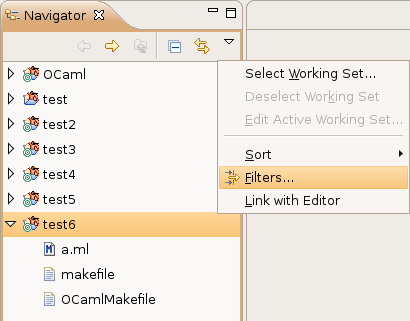

You can use filters to choose which file types you want to see in the navigator, and which ones you want to hide.
By default, all the OCaml object files are hidden, so that they won't clutter the view, along with some files and directories used internally by the OCaml plug-in.
If you want to change that default, click on the little arrow in the navigator's toolbar, and select Filters...

Then, in the dialog that appears, check the boxes corresponding to the file types you want to hide, or uncheck the boxes for those you want to be visible.